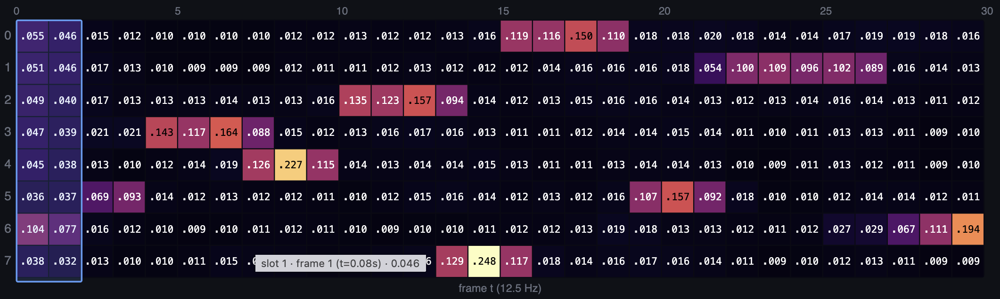
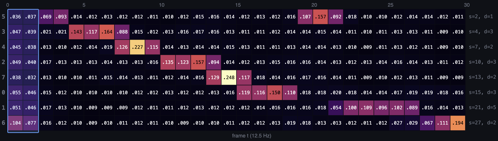
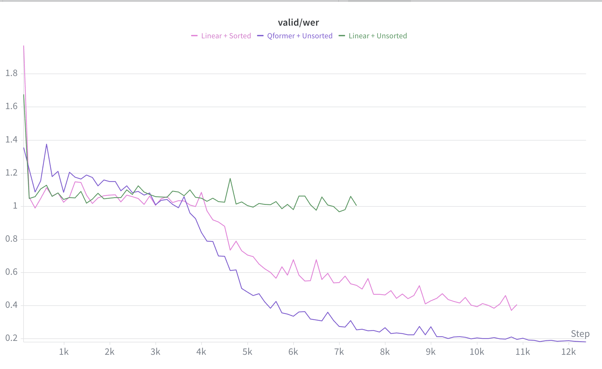
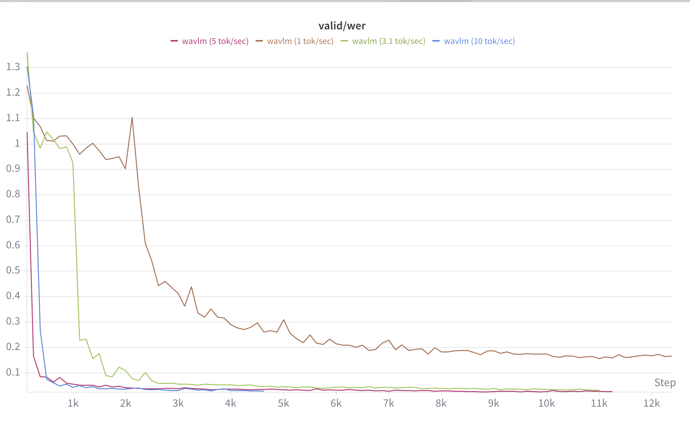
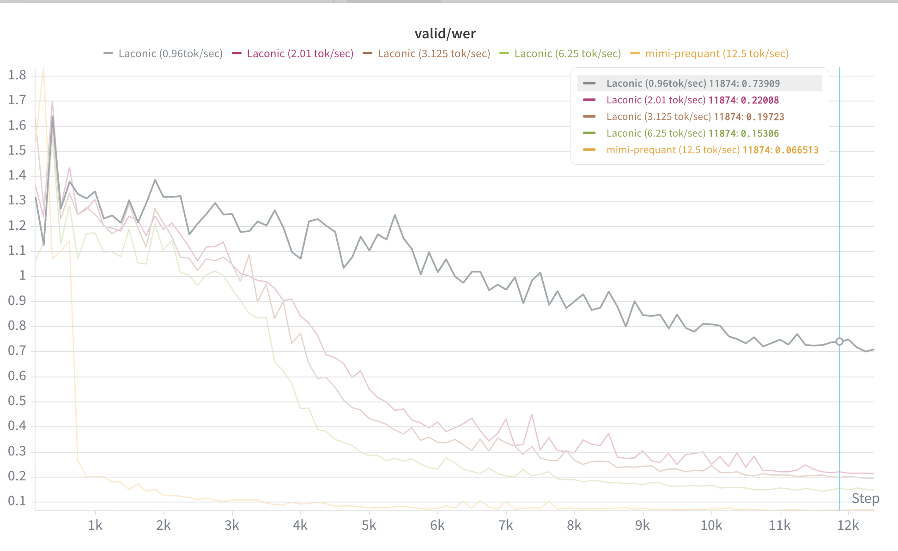
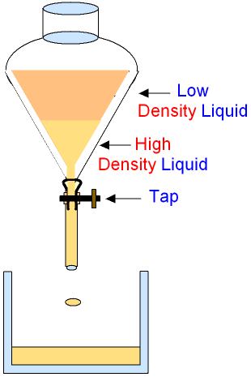

Laconic
Laconic: Training — nested dropout
- Input (S): Mimi features → Output (Ŝ): Mimi features
len(L)= fixed- Compression rate is tuned after the Laconic encoder
- Nested dropout: very similar to PCA under the hood
Pros
- Single nested representation — any prefix (the first k tokens) decodes on its own, so one code serves every compression rate.
Cons
- Prefix-ordering may be sub-optimal: each new token is forced to be an add-on to the earlier ones — it can only refine them, never revise them.
Laconic: Training — dropout at the input
- Input (S): Mimi features → Output (Ŝ): Mimi features
len(L) = ⌈T/R⌉— varies (T = # speech tokens · R = compression rate)- Compression rate is tuned before the encoder — the dropped tokens (X) are zeroed at the input
- No separate nested-dropout step — the zeroing is baked into the encoder input
Pros
- The encoder sees the target budget up front, so the kept tokens are jointly optimized for that rate — not forced add-ons.
Cons
- No longer a single nested code — each compression rate needs its own encode pass (re-zero the input, re-encode).
Laconic: Training — dropout at the input : Attention patterns

Laconic: Training — dropout at the input : Sorting first

Normal vs Sorted

SSL Models

WavLM Compression

Laconic Compression

Laconic: Training — interleave S & L
- Input (S): Mimi features → Output (Ŝ): Mimi features
len(L) = ⌈T/R⌉— varies (T = # speech tokens · R = compression rate)- Interleave the slots (L) among the speech tokens (S) — one L after every
Rframes - Only the L slots are fed to the Laconic decoder
Pros
- Streaming-friendly — each slot summarizes its own local chunk of frames, so the encoder can run causally / online.
Cons
- Static / fixed chunking — each slot only sees its own local window (less global mixing).
Laconic: Training — WavLM input
- Input (S): WavLM features → Output (Ŝ): Mimi features
len(L) = ⌈T/R⌉— varies (T = # speech tokens · R = compression rate)- Interleave the slots (L) among the WavLM tokens (S) — one L after every
Rframes - Only the L slots are fed to the Laconic decoder
Pros
- Richer, self-supervised input — WavLM carries more semantic content than raw Mimi codes for the slots to summarize.
Cons
- Cross-modal & cross-rate — WavLM (50 Hz) in, Mimi (12.5 Hz) out; needs an external WavLM encoder.
Chemical Separation

Laconic: Training — Separating funnel
S̄ = mean of S · S* = S − S̄
Three losses
- Loss A Rec(G, S̄) globals reconstruct the mean
- Loss B Rec(L, S*) learnables reconstruct the residual
- Loss C Rec(S, Ŝ) L2 loss between S and Ŝ
Swapping the first (global) token seems to swap the voice
two dissimilar speakers — exchange only the first (global) token between them, while keeping everything else.
original
laconic (3.1 tok/sec)
swap token 0
Utterance A: Speaker X
Utterance B: Speaker Y
Utterance A now sounds like Speaker Y (instead of X), and Utterance B now sounds like Speaker X (instead of Y)